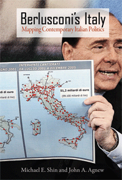

A richly-informed new explanation for the fluctuating fortunes of Italy’s colorful Prime Minister
A richly-informed new explanation for the fluctuating fortunes of Italy’s colorful Prime Minister


 A richly-informed new explanation for the fluctuating fortunes of Italy’s colorful Prime Minister
A richly-informed new explanation for the fluctuating fortunes of Italy’s colorful Prime Minister

|  |
Berlusconi's ItalyMapping Contemporary Italian PoliticsMichael E. Shin and John A. Agnewpaper EAN: 978-1-59213-717-6 (ISBN: 1592137172) |
"This book presents a novel argument in a succinct manner, offering a new perspective on a big issue: the rise to prominence of Silvio Berlusconi. It adds considerably to our understanding of the Berlusconi phenomenon."
—Martin Bull, University of Salford
Berlusconi's Italy provides a fresh, thoroughly-informed account of how Italy's richest man came to be its political leader. Without dismissing the importance of personalities and political parties, it emphasizes the significance of changes in voting behaviors that led to the rise-and eventual fall-of Silvio Berlusconi, the millionaire media baron who became Prime Minister. Armed with new data and new analytic tools, Michael Shin and John Agnew reveal that regional politics and shifting geographical voting patterns were far more important to Berlusconi’s successes than the widely credited role of the mass media.
Shin and Agnew reject the prevailing orthodoxy about how coalitions are organized and replaced in Italy. Instead, using recently developed methods of spatial analysis, they offer a compelling new argument about contextual re-creation and mutation. They conclude that Berlusconi’s success (and later defeat) can be best understood in geographic terms, and they suggest that geographical analysis has a useful role to play in examining political behavior in Italy and beyond.
Excerpt available at www.temple.edu/tempress
"A completely new conceptualization of Italian party politics and their reconstitution. It rejects the orthodoxy about how coalitions are replaced and globalized within Italy, and provides a provocative and compelling argument about their con-textual recreation and mutation. This is a fundamental book for those interested in Italian politics."
—Michael Ward, University of Washington
"Berlusconi's Italy is conceptually path breaking. Departing from accounts that focus on the media or the decline of regional subcultures, Shin and Agnew argue that place configurations that shift in time and space have created the kinds of fluid and powerful coalitions that have catapulted Berlusconi to power. This book is a must read not only for specialists in Italian politics and political geographers but for everyone interested in the mutating electoral politics of contemporary Europe."
—Mabel Berezin, Cornell University
"[S]hort but detailed…The book is written in part as a reaction to notions that political geography no longer matters, and that personality and national media are dominant in Italian politics and Western politics generally…The most crucial chapters…detail how Berlusconi put together center-right coalitions with differing allies in different parts of Italy. Summing Up: Recommended ."
—Choice
"This book is not just another of the many explanations of why and how Berlusconi keeps returning to power. It is, rather, an impressive and, in my view, a much needed correction to overly facile claims about the effects on elections of modern systems of communication, and particularly of television.... highly recommended ."
—Perspectives on Politics
"Political geographers Michael Shin and John Agnew offer historians of contemporary Italy fresh insights with their in-depth study entitled Berlusconi's Italy. They challenge the common explanations for Berlusconi's rise in Italian politics....In sum, this is a thought-provoking book with a highly convincing argument."
—The Journal of Contemporary History
"Shin and Agnew illustrate [their] argument with a convincing narrative sustained by sophisticated spatial analyses.... In making [their] argument so well, sustained by careful analyses of the rich electoral data available, Shin and Agnew have not only illuminated Italy’s recent electoral history as, in fact, a historical geography, but have also provided a paradigm for studies elsewhere. This short book is a worthy extension of Agnew’s work on Italy and on the role of place in politics and a fine example of what geography has to offer to electoral analysis."
—Party Politics
Preface
1. Introduction: Berlusconi's Italy
2. The Geography of the New Bipolarity, 1994-2006
3. Party Replacement, Italian Style
4. The Geographical Secret to Berlusconi's Success
5. What Went Up Later Came Down
6. Conclusion
Notes
References
Index
 | Michael Shin is Associate Professor of Geography at the University of California at Los Angeles. |
 | John Agnew is Professor of Geography at the University of California, Los Angeles. He is the author or co-author of Hegemony: The New Shape of Global Power (Temple), Place and Politics, The United States in the World Economy, The Geography of the World Economy, Geopolitics, and Place and Politics in Modern Italy, among other titles, as well as the co-editor of American Space/American Place. |
Geography
Political Science and Public Policy
General Interest
© 2015 Temple University. All Rights Reserved. This page: http://www.temple.edu/tempress/titles/1938_reg.html.